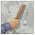
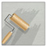

Velmar® Gran protección para mantenimiento de superficies metálicas
- • Alta protección y durabilidad.
- • Buen Rendimiento.
- • Ideal para mantenimiento de superficies.
Acabado: Brillante.
Interiores/Exteriores
Recomendaciones:
- • Aplicar en lugares ventilados.
- • Utilizar equipo de protección personal recomendado.
- • No recomendado para uso industrial.
Ideal para mantenimiento de superficies de metal como barandales, bancas, balcones, etc.
Para garantizar el mejor acabado es recomendable diluirlo con Solventes de la marca Comex.
SKU: 19A0200900
-
Capacidad
.25 L | .5 L | 1 L 4 L | 19 L | 200 L
-
Rendimiento
7 a 8 m2/L
-
Colores
3,200 en igualación Colores de línea: Blanco, Negro, Ocre, Verde manzana, Gris acero, Naranja, Café, Rojo oxido, Gris claro, Azul real, Amarillo canario, Azul eléctrico, Azul marino, Azul medio, Azul cielo, Amarillo oro, Verde Esmeralda, Bermellón
-
Tiempo de secado
Al tacto: 4-8 hrs
Curado total: 7 días, puede variar dependiendo de las condiciones ambientales.
Aplicación del producto
Preparado

La superficie a pintar deberá estar limpia, seca, libre de polvo, grasa, ceras y de cualquier otro contaminante que evite su adherencia.
Para remover el óxido o pinturas viejas en mal estado se recomienda utilizar el Removedor especial lavable Color Car.
Para remover todo tipo de ceras y grasas, utilizar el Removedor de ceras y grasas Color Car.
Utilizar plastiprotector para cubrir tus superficies antes de pintar.
Sellado

Se recomienda el uso de Comex 100 Primario de Secado Extra Rápido.
Mejora la adherencia prolongando la vida del acabado.
Fácil aplicación con brocha, rodillo y aspersión. Secado en sólo 30 minutos. Ideal para acabados arquitectónicos..
Acabado

Cuando se aplica con brocha y rodillo debe diluirse del 5 al 10% con Thinner Estándar.
Acabado y accesorios para pintar: Esmalte Velmar®, Aplicar con brocha Plus, Felpa especial para esmaltes, Compresor éxito 2.5 HP.